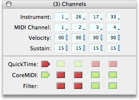

The Channels palette contains controls for changing the settings of all 4 parts of the current document - or the global settings if no document is open. The controls in this palette are popup menus and "draggers." Draggers work by clicking on the right side of the control and dragging up and down. The draggers and popups in this palette also respond to a mouse wheel.
Palette Features
- Instrument Selectors
- Choose General MIDI instruments for each part with these selectors.
- MIDI Channel Selectors
- Choose the MIDI output channel for each part with these selectors.
- Velocity Selectors
- Change the velocity of each part with these controls.
- Sustain Selectors
- Change the sustain of each part with these controls.
- QuickTime Switches
- Enable and disable the QuickTime output of each or all parts with these switches.
- MIDI Switches
- Enable and disable the MIDI output of each or all parts with these switches.
- Filter Switches
- Enable and disable the filter setting for each part with these switches. Parts that are filter-enabled are included in the submenu so that they can be transformed together as a group.